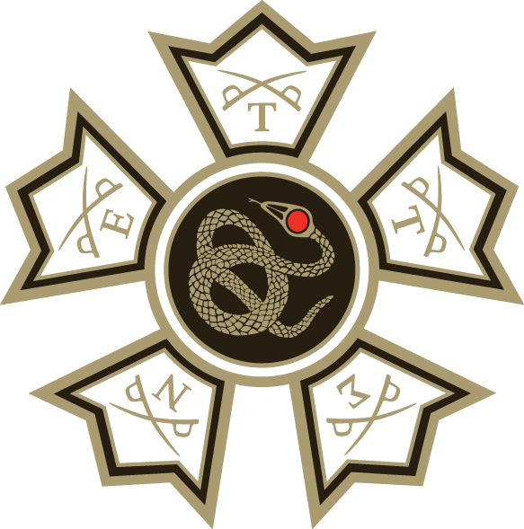
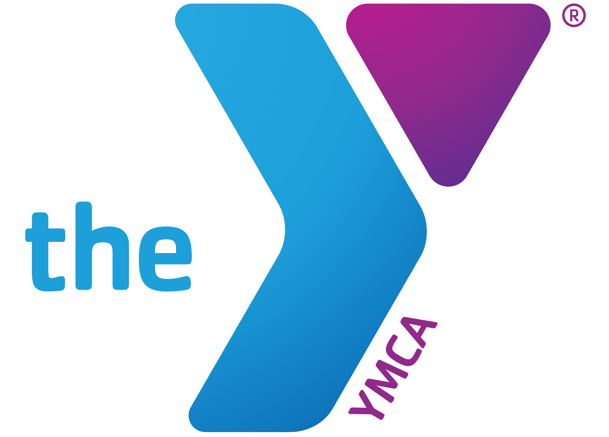

Aiden McDonald
Game designer at Georgia Tech. I prototype fast, playtest early, and iterate on what players actually do.
Computational Media, graduating May 2028 · Looking for a summer 2027 game design internship
Featured work
Click a project for its full breakdownAll projects
About me
I study Computational Media at Georgia Tech with threads in Media and Games, which combines computer science with the design of interactive media.
I grew up playing Metal Gear Solid, Arkham Knight, Super Mario and Sonic, and fell in love with how they combine story, art and gameplay into one experience. I still pick apart how a game’s mechanics work whenever I play.
Outside of games, I’m a member of Sigma Nu, I run STEM booths for kids at YMCA events around Atlanta, I play basketball whenever I can, and I’m learning guitar.
Education
-
Georgia Institute of Technology · May 2028 B.S. in Computational Media, threads in Media and Games. Coursework: Game Design, Data Structures and Algorithms, Objects and Design, Media Device Architecture, Artificial Intelligence.
Experience

Pool Manager, Sigma Nu · 2025 to now Manage and maintain the chapter’s 20,000-gallon pool, and led its restoration and repairs.
STEM Event Vendor, YMCA · 2024 to now Run hands-on STEM booths at community events for 100 to 150 kids each.-
Membership Representative, YMCA · 2024 to 2025 Signed 5 to 7 new members a week and solved members’ website and app issues.
-
Team Leader, Big Easy Sno-Balls · 2023 to 2024 Trained 4 new hires and ran the store on my own for 60 to 100 customers a day.